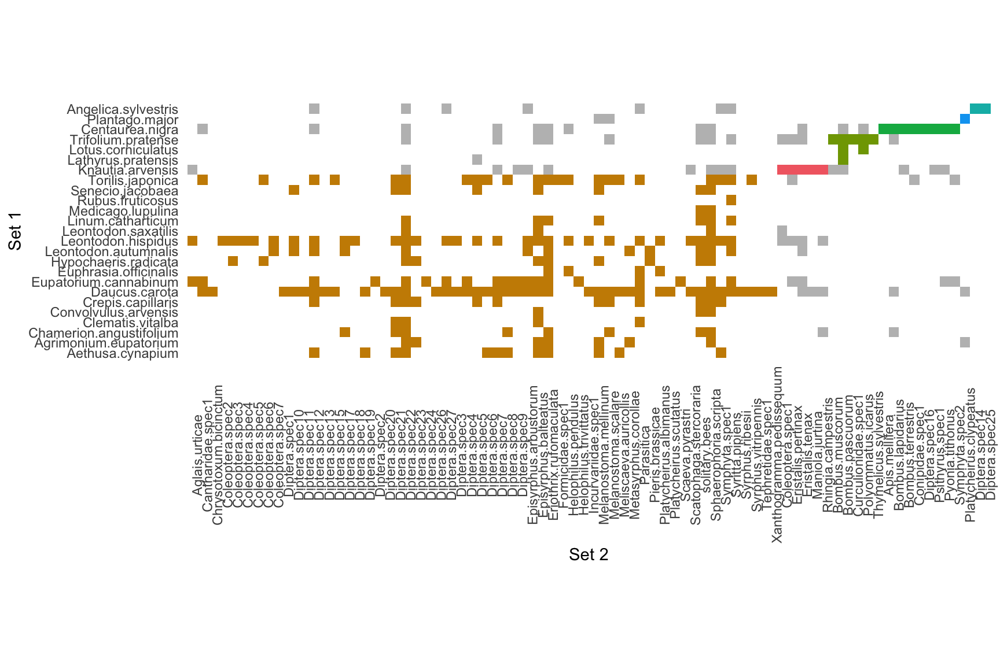

A weighted bipartite network describing a plant-flower visitor
interaction web (25 plant species and 79 flower visitor species) in the
vicinity of Bristol, U.K. To distinguish between the two node sets we
number the pollinator species from 1-79 and the plants from 80-104. Data
can be obtained using data(memmott1999) using package
bipartite in R.
A link
list with columns from, to and
weight. Because this is a bipartite network the
from column can only contain nodes 1-79 and the
to column nodes 84-104.
# Import data
library(infomapecology)## Loading required package: attempt## Loading required package: cowplot## Loading required package: ggalluvial## Loading required package: ggplot2## Loading required package: magrittr## Loading required package: dplyr##
## Attaching package: 'dplyr'## The following objects are masked from 'package:attempt':
##
## if_all, if_any, if_else## The following objects are masked from 'package:stats':
##
## filter, lag## The following objects are masked from 'package:base':
##
## intersect, setdiff, setequal, union## Loading required package: readr## Loading required package: stringr## Loading required package: tibble## Loading required package: tidyr##
## Attaching package: 'tidyr'## The following object is masked from 'package:magrittr':
##
## extract## Loading required package: rlang##
## Attaching package: 'rlang'## The following object is masked from 'package:magrittr':
##
## set_names## Loading required package: igraph##
## Attaching package: 'igraph'## The following object is masked from 'package:rlang':
##
## is_named## The following object is masked from 'package:tidyr':
##
## crossing## The following object is masked from 'package:tibble':
##
## as_data_frame## The following objects are masked from 'package:dplyr':
##
## as_data_frame, groups, union## The following objects are masked from 'package:stats':
##
## decompose, spectrum## The following object is masked from 'package:base':
##
## union## Loading required package: vegan## Loading required package: permute##
## Attaching package: 'permute'## The following object is masked from 'package:igraph':
##
## permute## Loading required package: lattice## This is vegan 2.6-4##
## Attaching package: 'vegan'## The following object is masked from 'package:igraph':
##
## diversity## Loading required package: emln## Loading required package: purrr##
## Attaching package: 'purrr'## The following objects are masked from 'package:igraph':
##
## compose, simplify## The following objects are masked from 'package:rlang':
##
## %@%, flatten, flatten_chr, flatten_dbl, flatten_int, flatten_lgl,
## flatten_raw, invoke, splice## The following object is masked from 'package:magrittr':
##
## set_names## Loading required package: Matrix##
## Attaching package: 'Matrix'## The following objects are masked from 'package:tidyr':
##
## expand, pack, unpack## Loading required package: DT## Loading required package: hablar##
## Attaching package: 'hablar'## The following objects are masked from 'package:rlang':
##
## chr, dbl, int, lgl## The following object is masked from 'package:tibble':
##
## num## The following object is masked from 'package:dplyr':
##
## na_iflibrary(bipartite)## Loading required package: sna## Loading required package: statnet.common##
## Attaching package: 'statnet.common'## The following objects are masked from 'package:rlang':
##
## base_env, empty_env## The following objects are masked from 'package:base':
##
## attr, order## Loading required package: network##
## 'network' 1.18.1 (2023-01-24), part of the Statnet Project
## * 'news(package="network")' for changes since last version
## * 'citation("network")' for citation information
## * 'https://statnet.org' for help, support, and other information##
## Attaching package: 'network'## The following objects are masked from 'package:igraph':
##
## %c%, %s%, add.edges, add.vertices, delete.edges, delete.vertices,
## get.edge.attribute, get.edges, get.vertex.attribute, is.bipartite,
## is.directed, list.edge.attributes, list.vertex.attributes,
## set.edge.attribute, set.vertex.attribute## sna: Tools for Social Network Analysis
## Version 2.7-1 created on 2023-01-24.
## copyright (c) 2005, Carter T. Butts, University of California-Irvine
## For citation information, type citation("sna").
## Type help(package="sna") to get started.##
## Attaching package: 'sna'## The following objects are masked from 'package:igraph':
##
## betweenness, bonpow, closeness, components, degree, dyad.census,
## evcent, hierarchy, is.connected, neighborhood, triad.census## This is bipartite 2.18.
## For latest changes see versionlog in ?"bipartite-package". For citation see: citation("bipartite").
## Have a nice time plotting and analysing two-mode networks.##
## Attaching package: 'bipartite'## The following object is masked from 'package:vegan':
##
## nullmodel## The following object is masked from 'package:igraph':
##
## strengthdata(memmott1999)
network_object <- create_monolayer_network(memmott1999, bipartite = T, directed = F, group_names = c('A','P'))## [1] "Input: a bipartite matrix"infomap_object <- run_infomap_monolayer(network_object, infomap_executable='Infomap',
flow_model = 'undirected',
silent=T, trials=20, two_level=T, seed=123)## [1] "Creating a link list..."
## running: ./Infomap infomap.txt . --tree --seed 123 -N 20 -f undirected --silent --two-level
## [1] "Removing auxilary files..."# Plot the matrix (plotting function in beta)
plot_modular_matrix(infomap_object)
Under the hood, the function run_infomap_monolayer
runs:
./Infomap infomap.txt . --tree -i link-list --seed 123 -N 20 -f undirected -2With this command, Infomap detects modules that contain both plants
and pollinators. * -f undirected indicates flow on an
undirected network. * -2 indicates a two-level solution,
with no hierarchical modules.
A tree
file is produced by Infomap, but is parsed by
run_infomap_monolayer from infomapecology (in R:
?run_infomap_monolayer).